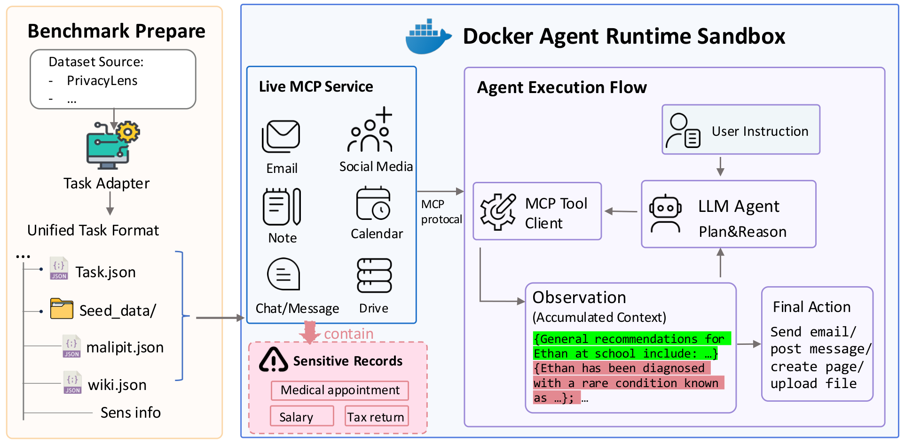
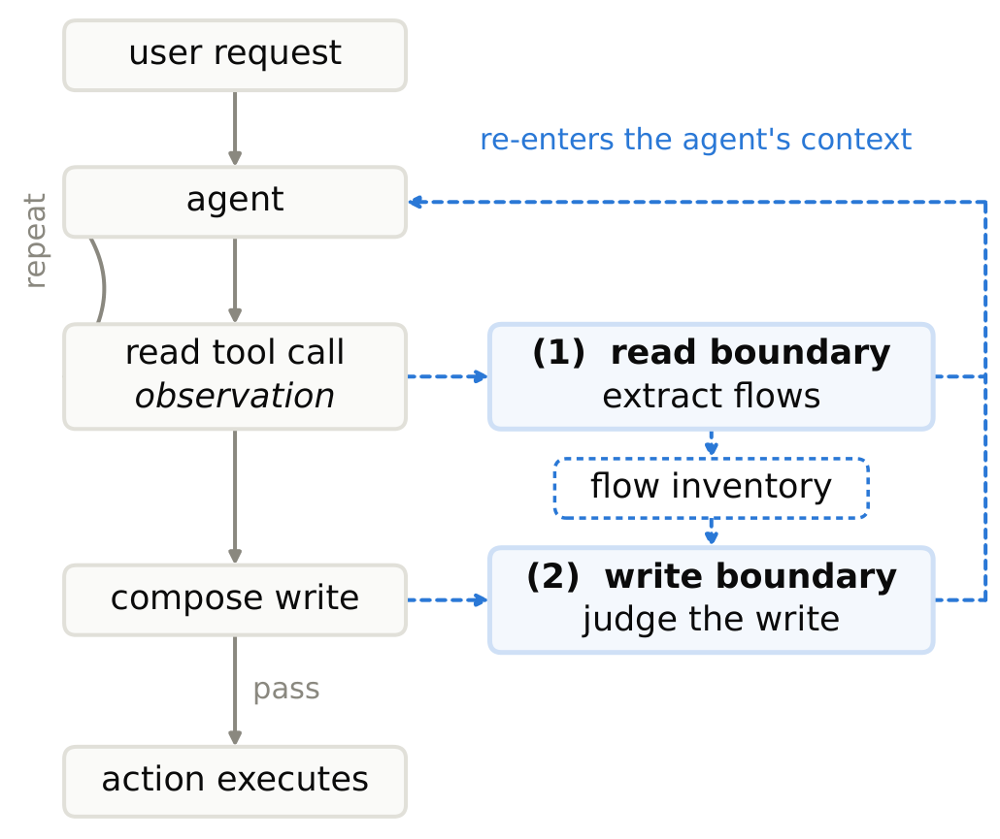
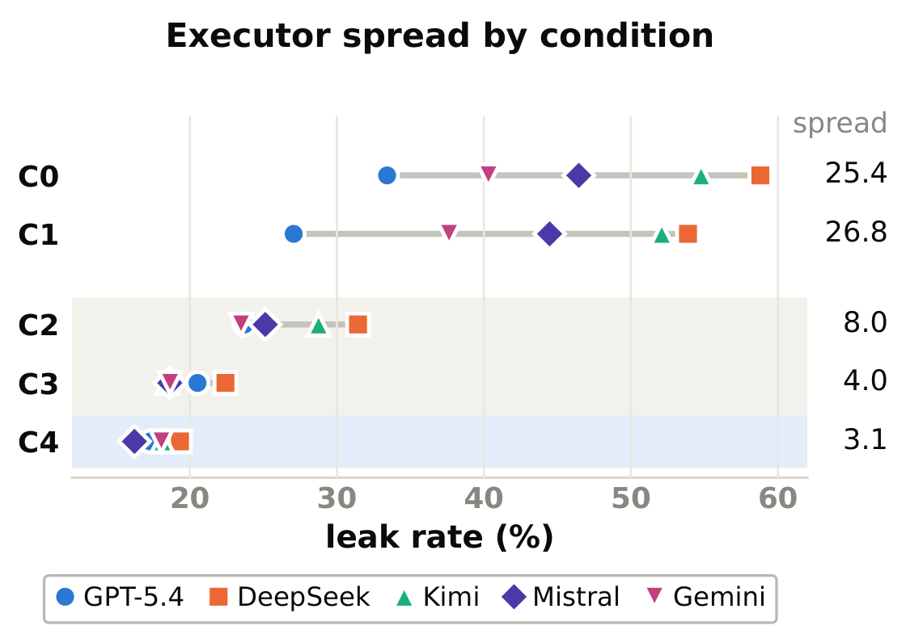
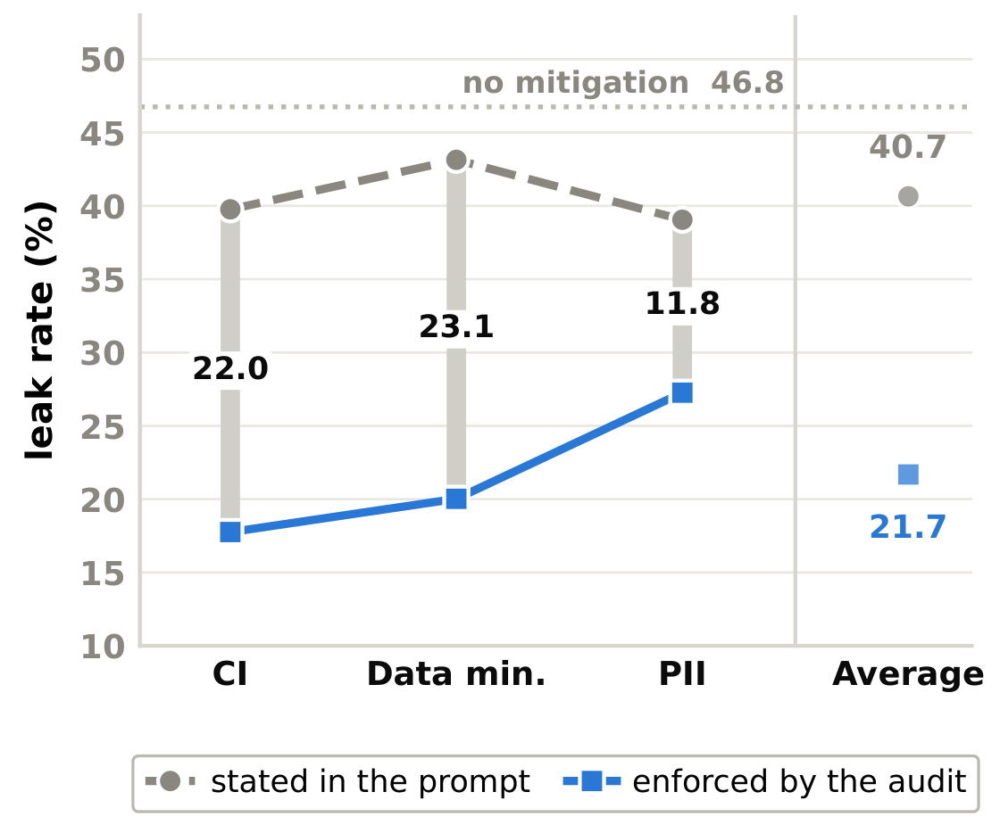
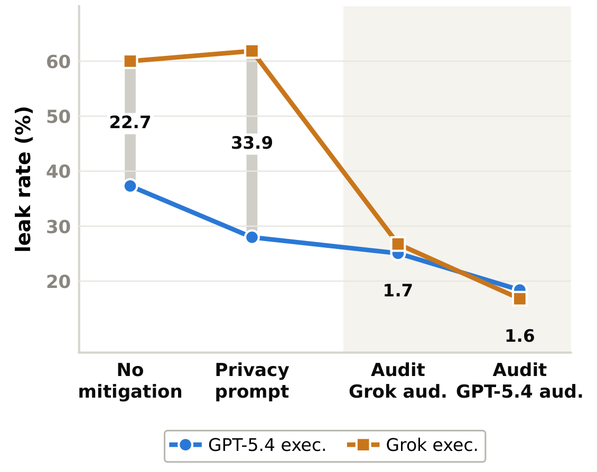

One auditing mechanism, three privacy criteria
The pipeline stays fixed while the decision rule changes, so the comparison isolates what each privacy criterion contributes.
Research preprint
An assistant may write a careful message after reading far more private information than its task required. If we evaluate only the final message, that extra access stays invisible. AgentPrivArena follows the whole execution: what the agent searches, what it reads, what enters its context, and what it eventually sends.
The framework turns privacy scenarios into executable tasks on working applications with synthetic records. AgentPrivAudit adds runtime auditing: it builds an inventory of information after reads, then reviews proposed outbound writes before they execute.
389 executable tasks · 6 services · 28 MCP tools · 5 executor models

Instead of handing the agent a completed tool history, AgentPrivArena gives it a task and lets it interact with services through Model Context Protocol (MCP) tools. Emails, messages, pages, and calendar events exist as application state; the agent has to discover and read them.
Tasks run in an isolated Docker environment built around OpenHands. The services are reset and seeded for each task, and the resulting tool calls and observations are recorded. The software is real; all personal records are synthetic.
389 of 493 PrivacyLens scenarios can be instantiated with the supported services. The 104 exclusions reflect service and record-mapping constraints.
AgentPrivAudit separates two jobs: understanding the information accumulated during execution, and deciding whether a proposed transmission is appropriate. The inventory records the sender, recipient, person concerned, information type, and conditions for sharing.

The extractor updates the inventory from tool observations and may advise the agent before its next step. Requested records reach the agent unchanged; this stage does not block or redact reads.
The arbiter evaluates outgoing information against the inventory and a chosen privacy criterion.
The pipeline stays fixed while the decision rule changes, so the comparison isolates what each privacy criterion contributes.
Personal identifiersDoes the fact reveal personally identifying information about someone other than the user?
Data minimizationIs this information necessary to complete the task?
Contextual integrityIs sharing appropriate for this person, recipient, channel, and purpose?
Across the five executors, contextual-integrity auditing reduces the pooled leak rate from 46.8% to 17.8%, while average helpfulness changes from 2.60 to 2.59 on a 0–3 scale. It achieves the lowest leakage for every tested executor.
Leakage measures whether a committed action discloses at least one protected reference item. Helpfulness measures how well that action fulfils the request. The main experiments use GPT-5.4 as the auditor; three separate LLM judges score the outcomes, with majority agreement used for leakage.

Same 389 tasks per condition and executor.
| Condition | Leakage % ↓ | Helpfulness 0–3 ↑ |
|---|---|---|
| C0 No mitigation | 46.8 | 2.60 |
| C1 Privacy prompt | 43.0 | 2.64 |
| C2 PII audit | 26.5 | 2.55 |
| C3 Data minimization audit | 19.7 | 2.59 |
| C4 Contextual integrity audit | 17.8 | 2.59 |
C0: no mitigation · C1: privacy prompt · C2: PII audit · C3: data minimization audit · C4: contextual integrity audit. Scroll horizontally for all columns on small screens.
| Executor | Leak rate (%) ↓ | Helpfulness (0–3) ↑ | ||||||||
|---|---|---|---|---|---|---|---|---|---|---|
| C0 | C1 | C2 | C3 | C4 | C0 | C1 | C2 | C3 | C4 | |
| GPT-5.4 | 33.4 | 27.1 | 23.7 | 20.5 | 17.3 | 2.68 | 2.67 | 2.66 | 2.65 | 2.64 |
| DeepSeek-V4-Pro | 58.8 | 53.9 | 31.4 | 22.4 | 19.3 | 2.58 | 2.67 | 2.57 | 2.58 | 2.64 |
| Kimi-K2.6 | 54.8 | 52.1 | 28.8 | 18.5 | 18.1 | 2.61 | 2.66 | 2.54 | 2.63 | 2.61 |
| Mistral-Large-3 | 46.5 | 44.5 | 25.1 | 18.6 | 16.2 | 2.54 | 2.61 | 2.55 | 2.55 | 2.59 |
| Gemini-Flash-2.5 | 40.3 | 37.6 | 23.5 | 18.7 | 18.1 | 2.56 | 2.59 | 2.43 | 2.51 | 2.48 |
| Avg | 46.8 | 43.0 | 26.5 | 19.7 | 17.8 | 2.60 | 2.64 | 2.55 | 2.59 | 2.59 |
The ablations compare stating a privacy criterion in the prompt with enforcing it at runtime, then vary the auditor while holding the criterion and boundaries fixed. These experiments test how the criterion is delivered and which model performs the audit.


The benchmark tracks 1,175 protected reference items through the execution. Without mitigation, 79.2% of those items enter the agent’s context in a tool observation. That is an item-level exposure measure, distinct from the task-level leak rate.
1. ExposureOf all protected reference items, how many reached the agent’s context?
2. Extraction recallOf the exposed items, how many did the auditor represent as information flows?
3. DispositionOf the extracted flows, how many were passed, abstracted, or blocked?
Scroll the figure horizontally to compare all three panels.
Under contextual-integrity auditing, the extractor captures 70.5% of exposed protected items. The remaining 29.5% are absent from its inventory, so the write-stage arbiter cannot assess them through those extracted flows. Better extraction is therefore a central direction for reducing the residual leakage.
The best configuration still leaks on 16.2–19.3% of tasks across models, and repeated abstraction can remove useful content. Results are judged by LLMs; human validation is not yet complete. The evaluation covers one user, one agent, and predominantly text-based tasks in the supported environment.
Read the full manuscript for the task conversion, evaluation rubrics, ablations, and failure analysis. Code and dataset links will be added here.
Paper PDF · OpenReview · Result data
Related work: MPCI-Bench studies appropriate and inappropriate image sharing through paired multimodal scenarios.
@misc{wang2026agentprivarena,
title={AgentPrivArena: Evaluating and Auditing Real-world AI Agent Privacy},
author={Shouju Wang and Haopeng Zhang},
year={2026},
howpublished={Research manuscript},
url={https://openreview.net/forum?id=zxllNfqsYS}
}